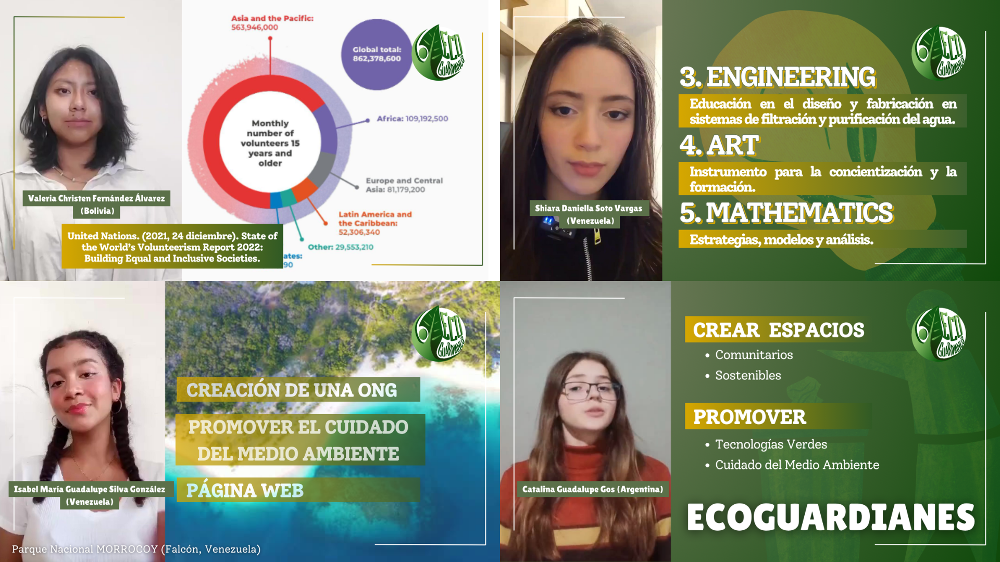

Soy una estudiante boliviano-estadounidense de Ingeniería de Sistemas en la
Universidad Católica Boliviana "San Pablo", enfocada en cerrar la brecha entre la
tecnología y el impacto comunitario. Completé mi educación primaria en Florida,
Estados Unidos, antes de trasladarme a Bolivia, lo que me da una perspectiva bicultural que
enriquece tanto mi formación técnica como mi comprensión de las necesidades comunitarias en
distintos contextos.
Al trabajar de cerca con organizaciones sociales y programas comunitarios en Bolivia, identifiqué
que las iniciativas con mayor compromiso solían estar limitadas no por falta de liderazgo, sino
por el acceso limitado a herramientas técnicas y conocimiento de sistemas necesario
para escalar su impacto. Esa observación guía mi dirección académica y profesional.
Fortalezas principales
Liderazgo estudiantil temprano.
Perspectiva bicultural y bilingüe (Bolivia y Estados Unidos), útil para
comunicar ideas técnicas a audiencias diversas.
Pensamiento analítico propio de la ingeniería, combinado con sensibilidad
social y comunitaria.
Reconocimiento académico a nivel nacional, incluyendo un Reconocimiento
Parlamentario de la Asamblea Legislativa Plurinacional de Bolivia.
Objetivo profesional
Desarrollarme como Ingeniera de Sistemas con un fuerte componente de innovación
social, adquiriendo las competencias técnicas y de gestión de proyectos necesarias para diseñar
soluciones tecnológicas que fortalezcan a organizaciones e iniciativas de impacto comunitario en
Bolivia y la región.
Formación Académica
Ingeniería de Sistemas (en curso)
Universidad Católica Boliviana "San Pablo" — La Paz, Bolivia
–
Grado a obtener: Licenciatura en Ingeniería de Sistemas (en curso).
Beca Bachiller Plata (beca al mérito académico), otorgada por desempeño sobresaliente en
secundaria y un puntaje destacado en el examen de admisión.
Progreso estimado de la carrera:
Bachiller en Humanidades
Colegio Desmaissieres R.R. Adoratrices — La Paz, Bolivia
–
Grado obtenido: Bachiller. Mejor egresada (Valedictorian), con un promedio general
del 98%.
Experiencia Profesional y Liderazgo
Encargada de Mantenimiento Web
Arzobispado de La Paz · La Paz, Bolivia
–
Funciones: mantenimiento y actualización del sitio web institucional del Arzobispado de La Paz.
Logro principal: actualización y mejora del diseño del sitio web.
Líder de Taller — IEEE Women in Engineering, Rama Estudiantil UCB
Universidad Católica Boliviana "San Pablo" · La Paz, Bolivia
–
Funciones: coordinar y facilitar actividades de la rama estudiantil de IEEE WIE
durante un taller.
Logro principal: facilitó el taller "Un Día Siendo Ingeniera", dirigido a
inspirar a niñas en carreras STEM ().
Vocal — Consejo de Representación Universitaria Estudiantil (CRUE)
Universidad Católica Boliviana "San Pablo" · La Paz, Bolivia
–
Funciones: representar los intereses del estudiantado y participar en la toma de
decisiones institucionales del consejo de gobierno de la universidad.
Logro principal: electa como vocal estudiantil por el cuerpo estudiantil
de la UCB San Pablo.
Voluntaria de Cuidado Animal (Catovoluntariado)
Centro de Rescate Animal Laika · La Paz, Bolivia
· 66 horas
Funciones: cuidado, alimentación y bienestar de animales rescatados en el centro.
Logro principal: reconocimiento "Conexión Especial" por dedicación
destacada a la misión de bienestar animal ().
Miembro del Jurado — Feria Contra la Violencia
Colegio Desmaissieres R.R. Adoratrices · La Paz, Bolivia
Funciones: evaluadora oficial del proyecto estudiantil "Proceso de
Despatriarcalización por una Vida Libre de Violencia", designada por la Dirección Académica.
Logro principal: designación como evaluadora oficial en reconocimiento a su
desempeño académico sobresaliente.
Habilidades Técnicas y Profesionales
Lenguajes y tecnologías
HTML5 —
6/10
CSS3 —
4/10
Java —
8/10
Python —
8/10
C++ —
7/10
Herramientas y software
Microsoft Office —
7/10
Microsoft PowerPoint —
8/10
Canva —
6/10
MediBang Illustrator —
8/10
Habilidades profesionales
Liderazgo estudiantil y trabajo en equipo.
Comunicación bilingüe (español e inglés).
Pensamiento analítico y resolución de problemas.
Diseño y comunicación visual.
Certificaciones, Cursos y Talleres
— Graphic Design Elements for
Non-Designers, University of Colorado Boulder (curso en línea). Calificación final:
97%.
— Beca de Marketing Digital, Save
the Children / Instituto de la Juventud. Programa competitivo sobre redes sociales, SEO y email
marketing.
— Bootcamp de Tecnología e
Innovación "Programando soluciones para el mundo", UNICEF / AGETIC Bolivia. 30 horas
académicas sobre desarrollo de aplicaciones móviles y emprendimiento.
– —
El Semillero Estudiantil, programa apoyado por Youth Ambassadors & World
Learning.
— Futures Week / Construyendo Futuros
2030, UNIFRANZ & The Millennium Project. Programa internacional sobre
pensamiento de futuros y desarrollo global.
– —
Geeky Latin@s, Programa Virtual STEAM (7.ª edición). 26 horas académicas;
desarrollo del proyecto Ecoguardianes.
Idiomas
Nivel de dominio por idioma
Idioma
Lectura
Escritura
Conversación
Español
Nativo
Nativo
Nativo
Inglés
Nativo
Nativo
Nativo
Proyectos Destacados
Budget-Buddy
Descripción: aplicación de consola en C++ para el registro, análisis y control del
presupuesto personal de estudiantes universitarios, con almacenamiento local en archivos CSV y generación
de reportes por categoría, fecha y mes.
Tecnologías utilizadas: C++, estructuras (struct), STL
(vector, fstream, iomanip, algorithm), archivos CSV
para persistencia de datos.
Rol desempeñado: desarrolladora, en colaboración con otros miembros del equipo (Jeimy Montaño, Luciana Saavedra).
Resultado obtenido: aplicación de consola completamente funcional, con registro y
eliminación de gastos, detección de excesos de gasto y reportes automáticos por categoría, fecha y mes.
Descripción: juego de lógica y deducción desarrollado en Python, en el que se debe adivinar
un número secreto de 4 dígitos distintos combinando pistas de "Fama" (dígito y posición correctos) y
"Toque" (dígito correcto, posición incorrecta).
Tecnologías utilizadas: Python, Tkinter (interfaz gráfica), Pygame (música de fondo),
animaciones en GIF.
Rol desempeñado: autora del proyecto (revisión de Arantza Jeimy Montaño).
Resultado obtenido: juego completo y funcional con tres niveles de dificultad (Principiante,
Intermedio y Experto), interfaz gráfica personalizada, música de fondo y título animado; distribuido como
ejecutable independiente para Windows.
Descripción: proyecto de impacto social y ambiental desarrollado durante el
programa internacional Geeky Latin@s – Virtual STEAM Program (7.ª edición), orientado a
empoderar a minorías y promover la inclusión en carreras STEAM.
Tecnologías y metodologías utilizadas: metodologías de diseño de proyectos STEAM,
herramientas colaborativas virtuales, Canva para el diseño de materiales visuales.
Rol desempeñado: integrante del equipo de desarrollo del proyecto.
Resultado obtenido: 1er lugar en la categoría de Impacto Social
STEAM, con un puntaje de 9.80/10 ().
Proyecto desarrollado en el marco de un programa internacional; no cuenta con repositorio o
demostración pública en este momento.
Hoja de Vida Web — Showcase HTML5 Nativo
Descripción: esta misma hoja de vida, desarrollada como proyecto de la asignatura
de Desarrollo Web, aplicando exclusivamente HTML5 semántico nativo, sin frameworks ni
JavaScript.
Tecnologías utilizadas: HTML5 (etiquetas semánticas, formularios, tablas,
multimedia y criterios de accesibilidad).
Rol desempeñado: autora y desarrolladora única del proyecto.
Resultado obtenido: sitio funcional que cumple los criterios de estructura
semántica, accesibilidad, multimedia y formularios definidos en la rúbrica del curso.
Figura 1: Fotografía profesional utilizada en el encabezado de esta hoja de vida.
Presentación en audio
Breve presentación personal en formato de audio:
Audio 1: Presentación personal
Imagen de EcoGuardianes

Figura 2: Imagen representativa del proyecto Ecoguardianes.Ver más sobre este proyecto
Ecoguardianes fue desarrollado entre febrero y junio de 2024 como parte del programa Geeky
Latin@s, un espacio virtual STEAM enfocado en empoderar a minorías. El proyecto obtuvo el
primer lugar en la categoría de Impacto Social STEAM, con un puntaje de 9.80/10.
Video de proyecto
Video relacionado con un proyecto de Presentación Personal:
Video 1: Presentación del proyecto
Información Rápida (Elemento Nativo)
Formulario de Contacto
¿Quieres conversar sobre una oportunidad, colaboración o mentoría? Completa el siguiente formulario: